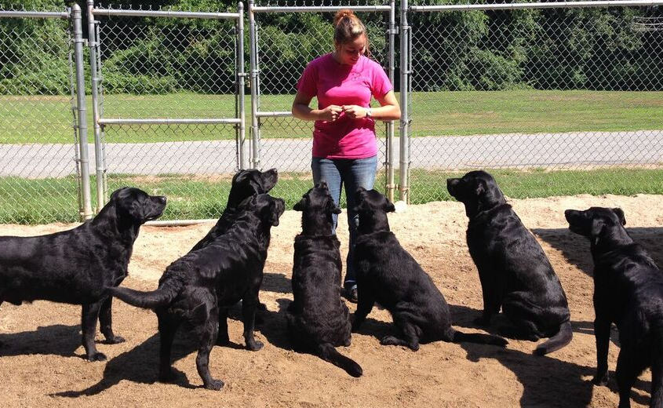

Sit
|
Since this trick involves a natural movement, you first want your dog to re-create the movement, then name it. The easiest way to get your dog to move
in this way is to stand in front of them with a treat, and raise the treat in the air so that your dog must sit to look up at the treat. As the sit sits,
repeat the word "sit." Once the dog sits on command, reward them with the treat you are holding. Even though this is a natural movement for your dog, make
sure that you are regularly practicing the trick to make sure they remember it on command.
|
 |
|---|